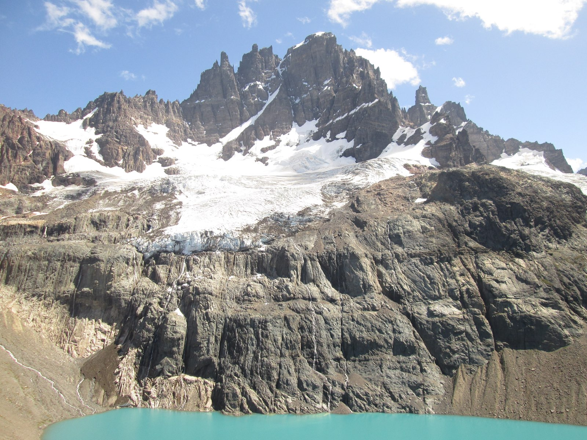

Rock spires above a glacier, turquoise lagoons and lenga beech forests: hiking in Aysén ranges from twenty-minute walks to multi-day treks with a tent. And almost all of it lies within a few hours of Coyhaique along the Carretera Austral.
This guide brings together the four main hiking destinations in the region: Cerro Castillo, Coyhaique National Reserve, Queulat National Park and Patagonia National Park. It covers distances, seasons, and what you need to know about passes and rules.
Cerro Castillo trek: the Las Horquetas traverse
Cerro Castillo National Park covers 143,502 ha in the municipalities of Coyhaique and Río Ibáñez. It was a national reserve from 1970 and became a national park in 2018. The Carretera Austral crosses it 64 km south of Coyhaique, and the CONAF ranger station is at Laguna Chiguay, at km 57 of Route 7 South. The village of Villa Cerro Castillo is about 93–100 km from Coyhaique, roughly 1 h 30 min by car. Fill up with fuel before you set off.

Park trails, according to CONAF
- Las Horquetas: 53.5 km, 3 to 5 days, moderate. This is the main traverse.
- Laguna Castillo viewpoint: 14 km, about 8 hours.
- Estero Parada: 12 km.
- Laguna Chiguay: 2.5 km, 2 hours, easy.
According to the park's trail network (Red de Senderos del PN Cerro Castillo), the traverse is 42 to 54 km depending on the variant, with about 2,000 m of ascent and 2,500 m of descent. They recommend 3 or 4 days. The campsites are Río Turbio, El Bosque, Porteadores and Neozelandés.
Cerro Castillo passes, hours and season
You must register at the ranger station. Passes are sold by the trail network at senderospncc.cl. For Las Horquetas you need a pass of 3 days or more, bought in advance, and entry to the trail is between 8:00 and 14:00.
| Pass (2026, for reference) | Chilean nationals | Foreign visitors |
|---|---|---|
| 1 day | CLP 17,750 | CLP 21,250 |
| 3 days | CLP 31,650 | CLP 35,000 |
These prices come from secondary sources and are not confirmed by an official one. Check them on senderospncc.cl before you travel. One guide also mentions a cap of 40 people per day.
The recommended season is December to March, and guided operators start in late November or early December. Las Horquetas, Laguna Castillo and Estero Parada close from May to September. While researching this guide, CONAF's page listed Las Horquetas and Laguna Castillo as "closed / certified guide only", which may be the winter status: confirm it before you plan.
CONAF warnings: there is a risk of hantavirus, and fires, pets and drones are strictly prohibited.
Coyhaique National Reserve: trails next to town
If you have a free afternoon in Coyhaique, the Coyhaique National Reserve is about 5 km northeast of town. You reach it along the road to Puerto Aysén and then a gravel country road on the southern slope of Cerro El Cinchao. It covers 2,150 ha.
- Short, easy trails of 250 m to 2.5 km: Laguna Verde, Los Leñeros, El Chucao and others.
- Las Piedras: 6.6 km, 5 hours, moderate. Closed from May to September.
- Campsite: 8 pitches, with toilets at Laguna Verde and Casa Bruja. The water is not drinkable.
For hours and fees, CONAF refers visitors to pasesparques.cl.
Queulat National Park and the Hanging Glacier
Some 165 km north of Coyhaique and 180 km south of Chaitén on Route 7, Queulat National Park protects 154,093 ha in the municipalities of Cisnes and Lago Verde. It was created in 1983, and its best-known sight is the Ventisquero Colgante, or Hanging Glacier, above Laguna Témpanos. The nearest village is Puyuhuapi.

- Laguna Témpanos: 600 m, 20 minutes.
- Morrena: 3.2 km, 2 hours.
- Laguna Los Pumas: 5.2 km, 5 hours. Closed from June to September.
- Ciudad de los Césares, Laguna Los Quetros and other short trails.
The campsite at the Ventisquero Colgante sector has been closed since 17 April 2026 until further notice. CONAF refers visitors to pasesparques.cl for fees and hours. Unofficial 2026 guides mention opening hours of 9:00 to 17:30 and closure on Mondays, so check before you go.
There is no mobile signal and no food for sale in the park. Bring water and food for the whole day.
Patagonia National Park
Further south, about 315 km from Coyhaique in the municipalities of Cochrane and Chile Chico, lies Patagonia National Park: 304,527.75 ha. It was created on 11 December 2018 (Decree 98, Ministry of National Assets) from the donation by Tompkins Conservation of the former Estancia Valle Chacabuco, together with the Jeinimeni and Tamango reserves. CONAF has managed it since 30 April 2019.
Sectors
- Valle Chacabuco: from the Baker entrance junction, 17 km before Cochrane, it is about 11 km east.
- Tamango: 4.3 km from the main square of Cochrane.
- Jeinimeni: about 65 km from Chile Chico on route X-753.
Highlight trails
- Lagunas Altas: 21 km, 7 hours (closed from June to September).
- Huemules: 22 km, 6 hours.
- Cañadón Chacabuco: 10 km.
- Siete Lagunas: 38 km, 3 to 5 days.
- Valle Avilés: 3 to 4 days.
- Valle Los Glaciares: 50 km, 4 to 5 days.
For the 2026–27 season, the Valle Chacabuco campsites open in stages: West Wind from 1 October, Casa Piedra from 15 October and Alto Valle from 1 November 2026. Tamango opens in October. The Cueva de las Manos circuit in Jeinimeni remains closed. CONAF refers visitors to pasesparques.cl for fees; one secondary guide quotes CLP 13,000 for foreign visitors in the 2026/27 season, a reference figure worth confirming. To plan the drive, see our Carretera Austral road trip guide.
Frequently asked questions
How many days do you need for Las Horquetas?
CONAF gives 3 to 5 days for its 53.5 km. The trail network recommends 3 or 4 days and requires a pass of 3 days or more bought in advance.
When is the best time to hike in Aysén?
December to March. Several CONAF trails close between May or June and September.
Are there easy hikes near Coyhaique?
Yes. Coyhaique National Reserve is about 5 km from town and has short, easy trails such as Laguna Verde.
Where do I buy park passes?
For Cerro Castillo, at senderospncc.cl. For Coyhaique National Reserve, Queulat and Patagonia National Park, CONAF refers visitors to pasesparques.cl.
A base of your own to explore Aysén
Anyone who walks these trails once tends to want to come back with more time. Inmobiliaria El Roble has two projects in Aysén, with legal advice throughout the purchase process and interest-free direct financing: Horizontes de Mañihuales, 4 plots of 0.53 to 1 ha on the Mañihuales River, with access by public road, 1 hour 10 minutes north of Coyhaique and 10 minutes from Villa Mañihuales, sold off-plan while SAG approval is obtained; and Parcelas Don Guillermo, on the Emperador Guillermo River, right on the Carretera Austral, where a single plot remains: B11, of 9,500 m². See all our projects, and if you also fish, read our guide to fly fishing in Aysén.
Sources
- CONAF, Cerro Castillo National Park, undated
- Senderos PNCC, Las Horquetas traverse, 3 Oct 2025
- Senderos PNCC, 1-day pass, undated
- Dip Your Trip, Cerro Castillo trek guide, undated
- Huemul en Ruta, Las Horquetas traverse, undated
- Chile.travel, trekking in Cerro Castillo, undated
- CONAF, Coyhaique National Reserve, undated
- CONAF, Queulat National Park, undated
- CONAF, Patagonia National Park, undated
- Ruta de los Parques, Patagonia National Park, undated